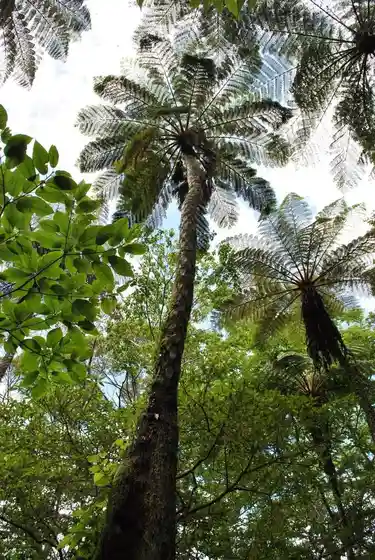
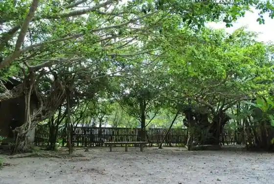
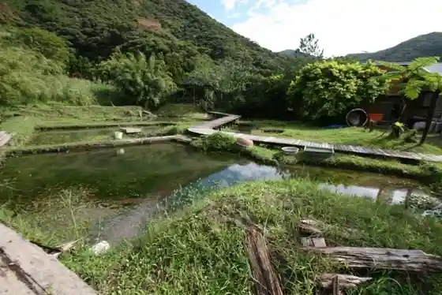

Ohama Seaside Park Obama Campground
Amami, Kagoshima · 0997-55-6000 · Official / source link
Amami Kaiyo Tenjikan
Amami, Kagoshima · 0997-55-6000 · Official / source link
Kinsaku Hara
Amami, Kagoshima · 0997-52-1111 · Official / source link

Tanaka Ichi Village Shuen no Ie
Amami, Kagoshima · 0997-52-1111 · Official / source link

Homba Amami Oshima Tsumugi Dorozome Park
Amami, Kagoshima · 0997-54-9088 · Official / source link

Kuroshio Forest Mangurobu Park (Roadside Station Amami Oshima Sumiyo)
Amami, Kagoshima · 0997-56-3355 · Official / source link
Yo An (Yoan) Coast
Amami, Kagoshima · 0997-52-1111 · Official / source link
Ayamaru Misaki Kanko Park
Amami, Kagoshima · 0997-63-1170 · Official / source link
Domori Coast
Amami, Kagoshima · 0997-63-1111 · Official / source link
Amami Park
Amami, Kagoshima · 0997-55-2333 · Official / source link
Kenmun Village
Amami, Kagoshima · 0997-63-1178 · Official / source link
Kako Shima Prefectural Amami Shonen Nature no Ie
Amami, Kagoshima · 0997-53-1032 · Official / source link
Tanaka Ichi Village Kinen Art Museum
Amami, Kagoshima · 0997-55-2635 · Official / source link
Amami Resort Basha Yama Village
Amami, Kagoshima · 0997-63-1178 · Official / source link
Hara Habu Ya Amami
Amami, Kagoshima · 0997-63-1826 · Official / source link
Amami Airport
Amami, Kagoshima · 0997-63-2295 · Official / source link
Gamo Saki Kanko Park
Amami, Kagoshima · 0997-63-1111 · Official / source link
Amande
Amami, Kagoshima · 0997-63-1111 · Official / source link
Suno Dam
Amami, Kagoshima · 0997-63-1111 · Official / source link
Yo Tembo Tokoro
Amami, Kagoshima · 0997-63-1111 · Official / source link
Santaro Village
Amami, Kagoshima · 0997-69-5077 · Official / source link
Amami Ritsu Amami Museum
Amami, Kagoshima · 0997-54-1210 · Official / source link
Roka Bu no Nanshu Shrine
Amami, Kagoshima · Official / source link
Amami Kyora Umi Workshop
Amami, Kagoshima · 0997-63-2208 · Official / source link
Shima Ryori (Gin Tei)
Amami, Kagoshima · 0997-52-9646 · Official / source link
Amami Kanko Habu Center
Amami, Kagoshima · 0997-52-1505 · Official / source link
Amami Oshima Sekai Isan Center
Amami, Kagoshima · 0997-69-2281 · Official / source link